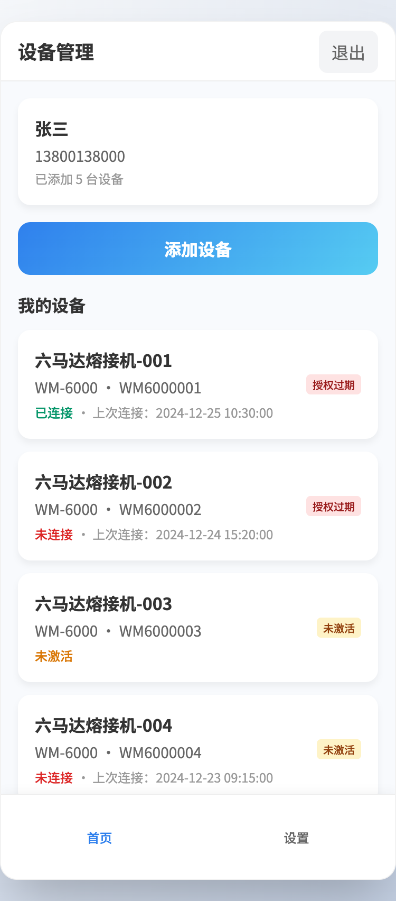
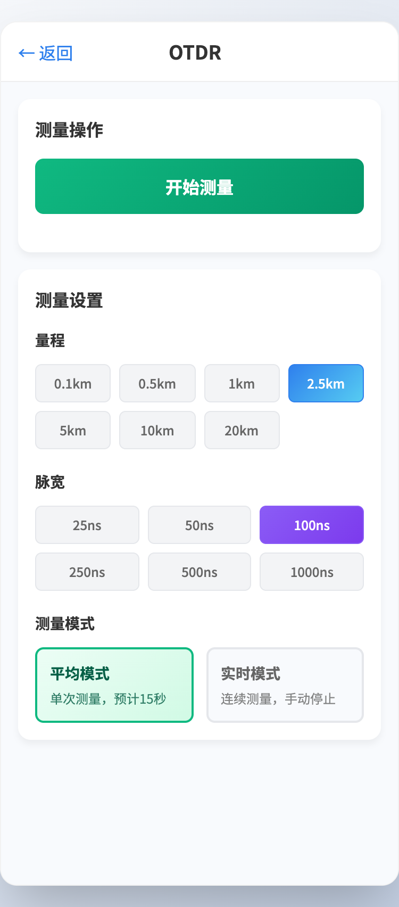
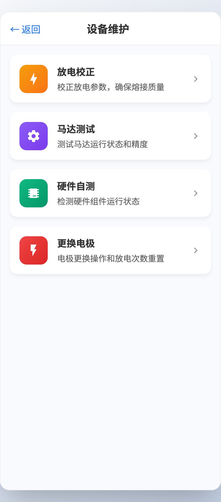

01 项目概览
让专业设备真正进入移动作业流程
这个项目面对的不是普通消费设备。现场人员需要快速确认设备能否使用、完成测试并保留结果；设备连接、授权、固件与数据归属任何一环不清楚，都会中断实际作业。
02 项目背景
设备能力明确，业务链路却容易被拆散
便携式 OTDR、光功率计等设备具备明确的检测能力，但蓝牙或 4G 连接、设备激活、授权校验、测试记录、固件升级和售后服务原本分属不同环节。现场人员不应该先理解这些技术边界，App 需要把它们组织成可以判断、操作和恢复的作业流程。
03 核心问题
连接成功，不代表一次测试已经可以开始
- 通信状态与账号、激活和授权状态容易混在一起
- 不同设备能力缺少一致的准备与进入方式
- 测试记录缺少设备、时间与任务上下文
- 固件版本和升级异常会直接影响设备可用性
- 发生问题后，测试信息难以顺畅进入售后流程
04 现场视角
如果用户正站在设备旁边
现场人员不需要先理解蓝牙、4G、激活、授权和固件之间的技术关系。他需要快速得到三个答案：设备现在能不能测，为什么不能测，下一步应该做什么。页面信息因此围绕作业判断展开，技术状态只在影响操作时出现。
确认设备已连接，并满足激活、授权和版本条件。
进入对应专业能力，完成测量并保存本次记录。
保留设备与测试上下文，按原因重试、升级或进入售后。
05 我的职责
重点处理专业能力、状态规则与异常恢复
- 对照设备需求清单梳理 OTDR 与光功率能力
- 定义发现、连接、激活、授权和可用状态
- 设计测量参数、执行反馈与记录查看
- 规划固件升级过程和失败恢复路径
- 关联具体设备、测试上下文与售后订单
- 协同硬件、研发与测试验证关键链路
06 产品方案
用户、专业设备与后台各自承担一段作业
发现并连接设备，完成激活、授权确认、专业测试与记录查看。
执行 OTDR、光功率等测试，返回测量结果、设备状态与固件信息。
承接设备资料、授权、版本与售后订单，让现场异常可以继续处理。
07 状态逻辑
通信建立之后，还要逐层确认能否测试
- 发现 OTDR、光功率计等专业设备
- 通过蓝牙或 4G 建立通信
- 检查设备是否完成激活
- 确认当前账号的使用授权
- 校验固件与设备能力是否可用
- 允许进入对应的测试页面
- 完成测试并获得结果
- 保存设备、测试类型与时间信息
保留当前设备选择，提示靠近设备或重新连接。
说明授权状态，回到授权设置或联系管理人员。
阻止关键测试，并引导完成固件升级。
显示失败阶段，允许重试；无法恢复时进入售后。
08 关键产品界面
技术状态被转换成可以执行的动作
以下为项目真实 Demo 截图，账号、设备编号、时间和状态为演示数据，不代表真实用户或运营结果。

同屏区分连接、激活和授权状态。
我的设计重点状态旁给出下一步，让用户知道应连接、激活还是处理授权。

在移动端设置量程、脉宽与测量模式并开始测试。
我的设计重点把参数选择和执行入口放在同一任务页，减少现场来回切换。

集中承接放电校正、马达测试、硬件自测与电极更换。
我的设计重点把低频维护与日常测量分开，避免专业维护动作干扰主作业。
09 产品决策
现场人员需要的是判断依据和下一步
我的判断：通信建立后，激活、授权或固件仍可能阻止测试。
最终方案：通信状态与业务可用状态分开，并将恢复动作放在对应状态旁。
我的判断：孤立数值无法复查，也不能支持后续服务。
最终方案：结果关联设备、测试类型与时间，保留回到设备和任务的路径。
我的判断：影响测试可靠性的版本问题不能只做弱提示。
最终方案：在进入关键作业前明确阻塞原因，并提供升级或退出选择。
10 项目难点
专业设备的复杂性不能直接转嫁给用户
蓝牙、4G、激活、授权和固件会形成多种组合，既要准确表达，也要避免页面被技术名词占满。
弱网、离线、升级中断和设备不兼容都可能发生。每种异常都需要明确保留什么、能否重试以及从哪里继续。
11 最终落地
形成可直接体验的专业设备作业 Demo
当前 Demo 覆盖设备发现与蓝牙连接、激活和授权、OTDR 与光功率测试、使用记录、固件升级和售后订单，重点验证专业设备进入移动端后的信息结构与关键操作。该成果用于产品方案和交互验证，不将 Demo 描述为已正式上线的商业产品。
12 项目复盘
专业设备页面首先要支撑现场判断
这个项目让我更重视作业压力下的信息顺序：现场人员先要知道设备是否满足测试条件，再进入专业能力；出现异常时，需要保留已经完成的步骤和测试上下文。若重新推进，我会在交互设计前建立设备能力矩阵与异常样本库，逐项确认每类设备能返回的状态、离线限制以及升级失败后的恢复位置。